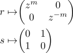

representation theory of D_n
Proposition
Let $D_n$ be the dihedral group with presentation
\begin{align*}
\langle r,s \vert r^n = s^2 = 1, srs^{-1} = r^{-1}\rangle
\end{align*}
Proof
$n$ even
Then the conjugacy classes of $D_n$ a
| element | amount in the conjugacy class |
|---|---|
| $1$ | $1$ |
| $\{r,r^{-1}\}$ |
- $
$n$ odd
in general, there exists
Define $V_m$ by

for $1 \leq m < \frac{N}{2}$ and $z = e^{ \frac{2 \pi \mathrm{i}}{N}}$. we claim that these are simple.
We argue directly by showing that $S$ flips the eigenspaces of $r$, so any subrepresentation is all of $V_m$. Any eigenvalue of the
These are a complete list:
$rq acts by different eigenvalues, hence they are pairwise non isomorphic and counting the conjugacy classes shows the claim.
Alternatvely, any representation has a subrepresentation in this list: pick any $v \in V$, an eigenvalue of $r$ and then $\{v, sv\} \subseteq v$ is a subrepresentation o $V$